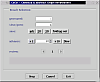
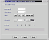
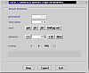
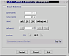

Viewing Results
This page explains how you can control processes that use viewer output. The viewers themselves open in separate windows and are documented on separate pages (find links at the bottom). Processes with file output are much simpler and are explained on a separate page.
We consider most generated graph sets too large for complete user inspection. You can picture the production process as a sequence of embedded graphs "flowing" past you. You stop this flow at certain points and CaGe will show you the current graph in all the viewers you have requested. Initially, CaGe is set to stop the "flow" at the first graph.
Let's use the set of C60 fullerenes -- numbering 1812 and introduced on the fullerenes page -- as an example. We assume that you have started CaGe, chosen the fullerenes generator, kept the fullerenes options window in its original state (min = max = 60 C atoms, no other option selected), and clicked "Next". In the output options window, you have requested 2D and 3D embedding, selected some viewers, and again clicked "Next".
CaGe
is now showing the window seen on the right, the results window.
And CaGe has started the production process and is waiting for a graph
to come in. Our fullerenes generator takes a short time for initialization
and then writes out the first graph. CaGe reads the graph, sets the top
number in the results window (labelled "generated") to one and
hands the graph over to two embedder processes, one each for calculating
2D and 3D coordinates. After the embeddings have been returned, CaGe increases
the second number (labelled "view/goto") to one and passes the
graph to all selected viewers. Our first screenshot shows the results
window at this time.
The number labelled "view/goto" is the number of the current
graph, the graph shown in all viewer windows. It is also shown between
the two arrow buttons, labelled "review", in the bottom third
of the results window.
Saving the current graph
The four "save" buttons below the "view/goto" number can be used to store the current graph in various ways. The first three, "adj", "2D", and "3D", save the graph as it is, but with different embeddings. The formats available are the same that you can use when selecting file output in the output options window (creating a background task). The idea behind these buttons is that you can save your own collection of "interesting" graphs, taken from some complete result set. Therefore, you are only once asked for a destination and format to use for "adj", "2D", and "3D" output. After these have been supplied and confirmed by clicking "Ok" in the save dialogue (not shown), you simply press these buttons once for each graph you wish to save. After a graph has been saved, the respective save button will be disabled so you can't save it again. You can save graphs in an order different from that produced by the generator by using the "review" buttons to go back to a previous, unsaved graph (see below).
You don't always see all save buttons. "adj" is always there, "2D" and "3D" are only shown if you have requested the respective embedding in the output options window. The folding net function (see next paragraph) is only available if 3D embedding has been chosen.
Saving a folding net for the current graph
A folding net is a 2D drawing of a graph's 3D embedding. It is produced by taking the 3D-embedded graph as produced by CaGe, cutting it open along a suitably chosen subset of edges, and rotating the faces around some uncut edge so that all faces finally come to rest on a common 2D plane. (Some faces may have to be straightened as well.) The idea is that you can print the resulting drawing on paper, cut it out and fold it back together, building a 3D model of the graph or molecule. Choosing the exact way to cut open and unfold the faces is a complicated process, and this is performed by a separate program that CaGe runs in the background, the folding net converter. If you use the "folding net" button, CaGe adds your request to a queue of folding net tasks. This queue is processed in the background, progress is shown in the background tasks window (see below).
The "folding net" button always asks for a destination to save to, unlike the other save buttons. It never asks for a format, though: the folding net converter writes its output in PostScript.
Advancing and reviewing
We have mentioned that CaGe adopts a "flow" model for handling the generated graph sequence. That flow is automatically stopped at the first graph, and it is then up to you to move forward. The controls next to the "advance" label serve this purpose. The "+1" and "+10" buttons shown in our screenshots do just what they imply. "+10" is just a default, though, you can change this button to any fixed distance greater than one by changing the value in the field to the left of the button. We will refer to this button as "+d" instead of "+10" from now on.

Press the "+1" button three times to advance from graph number
1 to number 4. At this point, you may want to compare the fourth graph
with one of the earlier ones. You can look back at graphs you have previously
stopped at using the two arrow buttons next to the "review"
label. Our second screenshot shows the results window after advancing
to graph 4 as described above, and pressing the backward review button
twice to look back at graph 2.
Besides moving forward by some given distance, you can also set the target number to move to. Just enter that number in the "view/goto" field. This can be the number of a graph previously stopped at, eliminating the need to click the forward or backward review buttons repeatedly. As a special shortcut, 0 (zero) can be entered to move to the last graph in the review list. You can also enter a number larger than the number of currently generated graphs, causing CaGe to advance to that number (as long as the generator will actually produce this many graphs, otherwise CaGe will stop advancing when the sequence ends). And finally, you can redisplay the current graph: click into the "view/goto" field in the results window, don't change the number, and press Return.
Flowing vs. Advancing
We say that CaGe is "flowing" whenever it is reading graphs from the generator, e.g. when you are asking CaGe to advance to some graph number either by entering the number in the "view/goto" field or by using the "+1" and "+d" buttons. There is a button in the "advance" section titled "flow", and CaGe presses and releases this button automatically to reflect its flowing state. While CaGe is flowing, you can't advance: the "+1" and "+d" buttons are disabled, and entering a number in "view/goto" beyond the highest graph number in the review list will not be accepted.
You can operate
the "flow" button, too. If CaGe is not flowing, press "flow"
to move the generation process forward indefinitely. CaGe will read graphs
and increase the "generated" number, but never stop by itself
unless the generation ends.
Whenever CaGe is flowing -- whether you have pressed "flow" or asked CaGe to advance to a particular graph number -- you can release "flow" and CaGe will immediately embed and then display the latest graph it has finished reading from the generator. If no such graph has been produced since the flow was last stopped (or none at all yet), flowing will stop and you can operate the +1, +d, or "flow" buttons to tell CaGe what graph to advance to next, or to start flowing indefinitely.
The two screenshots on the right show the results window after "flow" has been pressed and CaGe left flowing for a short while, and then after "flow" has been released a moment later. CaGe stops at the next possible graph number, 936 in this example, adds it to the end of the review list and displays the graph. All intermittent graphs (between 4 and 936) are lost.
End of a generation


When the generation process ends, CaGe will notice it is reading the last graph (an end-of-file condition is found while reading the generator output). Flowing then stops, the graph is added to the review list and displayed. A message appears in the status area together with a button, named "log file", that will display everything the generator pipeline has written to the standard error stream. For some generators, this can include some statistics on the result set.
Stopping and Restarting
The generation process is also controlled by the buttons at the bottom of the results window. All three stop the generator even if CaGe appears to be "hanging" while waiting to read a graph, and they close all viewers. The "Stop" button, named "Restart" in the last screenshot, does just that. With it you can run a generation process with the options you specified several times. "Cancel" stops and returns you to the generator selection window. "Exit" stops and ends CaGe unless any background tasks are still active.

The folding net converter mentioned above
was written by Alexander Lust.
| Output
Options |
||